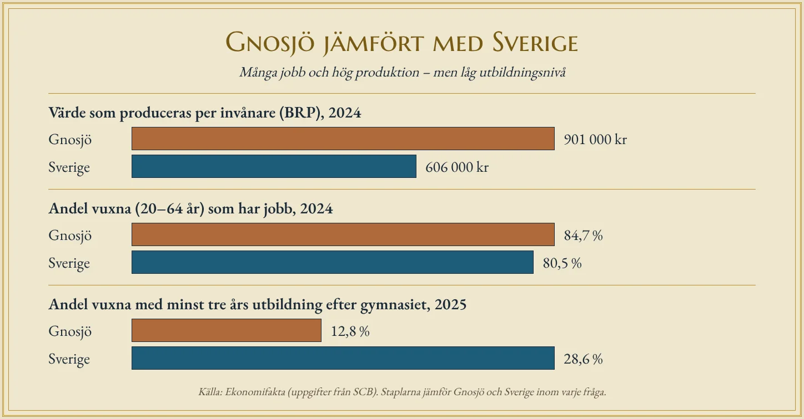

Järn på ryggen
En man går längs en stig genom den småländska skogen. På ryggen bär han en bunt järnstänger. Han kommer från Taberg söder om Jönköping, där det bryts järnmalm, och han har ungefär fem mil kvar att gå. Målet är Gnosjö, en socken med stenig mark, tunn jord och små gårdar som inte räcker till för att föda en familj.
Det låter som en dålig plats att bygga industri på. Där finns ingen malm, ingen stor älv, ingen hamn och ingen stad. Ändå blev Gnosjö en av Sveriges mest industritäta kommuner. I dag bor där drygt 9 000 människor, och kommunen har nästan 900 företag. Hur gick det till?
Svaret kallas ofta Gnosjöandan. Men ett ord förklarar ingenting i sig självt. Den här texten försöker visa vad som ligger bakom: en kedja av orsaker där fattigdom, vattenkraft, kunnande och människors sätt att samarbeta förstärkte varandra under flera hundra år.
Tråd i stället för bröd
Jordbruket i trakten gav för lite. Därför behövde bönderna något att göra vid sidan av, särskilt på vintern. Lösningen blev tråddragning. Järnstängerna drogs genom hål i en järnplatta, om och om igen, genom allt mindre hål, tills de blev tunn tråd. Först drevs dragningen av hästar, senare av vattenhjul i de små bäckarna. Med vattenkraft kunde man få fram tråd som bara var några tiondels millimeter tjock.
Redan på 1600-talet fanns ovanligt många smedjor och tråddragerier vid vattendragen kring Gnosjö. På 1800-talet var de ett par hundra – en samling som inte fanns någon annanstans i Sverige. Av tråden gjordes enkla saker som alla behövde: hakar och hyskor, nålar, säkerhetsnålar, visp, musfällor, mjölsiktar och delar till hästarnas seldon. Varorna såldes av kringvandrande försäljare, så kallade knallar, som vandrade med dem genom landet.
Här syns den första pusselbiten. Gnosjö hade inga stora naturtillgångar, men det hade brist. Och bristen tvingade fram ett hantverk som gick att göra hemma, i liten skala, med enkla verktyg. Det är en annan väg till industri än i Bergslagen, där det fanns malm, eller i Norrland, där det fanns skog och stora älvar.
Från hantverk till fabrik
När Sverige industrialiserades under slutet av 1800-talet växte några av verkstäderna till riktiga fabriker. En av dem var J. E. Hylténs Metallvarufabrik, som startade 1874. Den blev mer än en arbetsplats. Den blev en skola. Arbetarna lärde sig att forma metall, sköta maskiner, räkna på priser och hitta kunder. Efter några år kunde en del av dem tillräckligt mycket för att starta eget.
Så skedde också, gång på gång. Ur Hylténs ska det ha vuxit fram omkring femtio nya företag. Ur en annan fabrik i bygden, Bårebo, kom ett trettiotal. Sådana nya företag kallas avknoppningar: ett nytt företag växer ut ur ett gammalt, ungefär som en ny planta som skjuter skott från en gammal.
Det ovanliga i Gnosjö var hur de gamla företagen reagerade. På många håll ser en arbetsgivare det som ett svek om en anställd startar ett eget företag i samma bransch. I Gnosjö blev det tvärtom en tradition. Uppslagsverket Nationalencyklopedin beskriver Gnosjöandan just så: att man ofta startar företag vid sidan av en anställning, med arbetsgivarens goda minne. Det nya företaget kunde bli underleverantör till det gamla, eller ta order som det gamla inte hann med.
Även kriser blev en motor. Under 1930-talets depression förlorade många sina jobb. I stället för att flytta startade en del egna små verkstäder. Under andra världskriget, när det var svårt att importera varor, fick de här små företagen gott om beställningar, och flera av dem överlevde.
Varför fungerar det?
Ordet Gnosjöandan ska ha myntats av en tidningsredaktör på 1920-talet. Sedan dess har ekonomer och forskare försökt förstå vad den egentligen består av. Tre förklaringar återkommer.
Den första är samarbete mellan konkurrenter. Företagen i Gnosjö konkurrerar med varandra, men de lånar också ut maskiner, delar på order och skickar kunder vidare. Det sägs att man i Gnosjö aldrig säger nej till ett jobb – för om man inte klarar det själv finns det någon i grannskapet som gör det. På det sättet kan en bygd med många små företag ta stora uppdrag, nästan som om den vore en enda stor fabrik.
Den andra är förtroende. När alla känner alla, och när man träffas i samma föreningar och kyrkor, blir det lättare att göra affärer utan långa kontrakt. I Gnosjö har frikyrkorna länge varit starka, och många har pekat på att deras betoning av arbete, sparsamhet och ansvar har format bygden. Det är en vanlig förklaring, men den är svår att mäta, och forskarna är inte överens om hur stor betydelse den har haft.
Den tredje är det som kallas kluster. Du har läst om det i avsnittet om lokaliseringsfaktorer: när många företag i samma bransch samlas på samma plats drar de till sig fler. Kunnig arbetskraft finns redan på plats, underleverantörerna ligger runt hörnet och kunskapen sprids när folk byter jobb eller pratar med varandra. Gnosjö är ett tydligt exempel. Det som en gång började med tråd i bäckarna lever kvar som kunnande om metall och senare plast, långt efter att vattenhjulen slutade snurra.
Från fiskeredskap till takboxar
Ett av de mest kända företagen från bygden visar hur det kan gå till. År 1942 startade Erik Thulin ett litet företag i Hillerstorp, en ort i Gnosjö kommun. Han tillverkade fiskeutrustning. Tjugo år senare, 1962, började företaget göra takräcken till bilar. I dag heter det Thule och säljer takboxar, cykelhållare och barnvagnar över hela världen. Huvudkontoret ligger i Malmö, men utvecklingen och testerna sker fortfarande i Hillerstorp, och Thule är kommunens största privata arbetsgivare med över 600 anställda.
Gnosjö är ändå ingen ort som hänger på ett enda företag, och det är just det som gör platsen ovanlig. Många industriorter i Sverige har byggts kring ett enda stort bruk eller en enda fabrik, och när den stänger drabbas hela orten. Gnosjö har i stället hundratals små företag. Av de nästan 900 företagen i kommunen har fyra av fem färre än fem anställda. Om ett av dem går dåligt finns de andra kvar.
Gnosjö är inte heller ensamt. Kommunen ligger i ett större område tillsammans med grannkommunerna Gislaved, Vaggeryd och Värnamo, som ibland kallas GGVV-området. Där finns ett par tusen företag, de flesta små.
Rik men sårbar
Under lång tid såg Gnosjö ut som ett mirakel. År 1985 var arbetslösheten 0,6 procent, när den i hela Sverige var nästan fem gånger så hög. År 1990 var Gnosjö den kommun i landet där störst andel arbetade i tillverkningsindustrin, över 60 procent, och den kommun där minst andel arbetade i offentlig sektor.
Arbetskraften räckte inte till. Därför blev invandring en del av svaret. Först kom flyktingar från Vietnam, och på 1990-talet många från Bosnien. I Gnosjöregionen fick en stor del av dem arbete snabbt, mycket snabbare än i landet som helhet.
Men styrkan har också en baksida. Om man jämför Gnosjö med Sverige i dag ser man något som verkar motsägelsefullt. Värdet av det som produceras i kommunen, räknat per invånare, är bland de högsta i landet, och en större andel av de vuxna har jobb än i resten av Sverige. Samtidigt har bara drygt var åttonde vuxen en längre utbildning efter gymnasiet – mindre än hälften så många som i landet som helhet.
Det hänger ihop. I en bygd där det alltid har funnits jobb direkt efter skolan har många inte behövt studera vidare. Det fungerade länge. Men när finanskrisen kom 2008 försvann många order, och när fabrikerna automatiserades behövdes färre som skötte enkla moment och fler som kunde programmera och planera. Då blev den låga utbildningsnivån ett problem. Befolkningen har också minskat de senaste åren, eftersom många unga flyttar till större städer för att studera och inte kommer tillbaka.

En anda – eller en myt?
Det har fått en del att fråga om Gnosjöandan fortfarande finns, eller om den har blivit ett varumärke som kommunen använder i sin marknadsföring. År 2015 försökte invånarna själva svara. Tusentals bidrog med förslag via en hemsida, och resultatet blev tio ”budord” om vad andan står för.
Kanske är frågan fel ställd. Gnosjöandan var aldrig någon magisk egenskap hos människorna i Småland. Den var ett svar på en plats och en tid: fattig jord, rinnande bäckar, järn inom räckhåll och ett samhälle där alla var beroende av varandra. Det som gör Gnosjö intressant för en geograf är att platsen visar att lokaliseringsfaktorer inte bara handlar om naturresurser och transporter. De handlar också om kunskap, förtroende och vanor som byggs upp under lång tid – och som kan leva kvar, eller tyna bort, när förutsättningarna ändras.
Djupdykning till avsnitt 1 (Näringslivet), text C. Fördjupningsnivå.